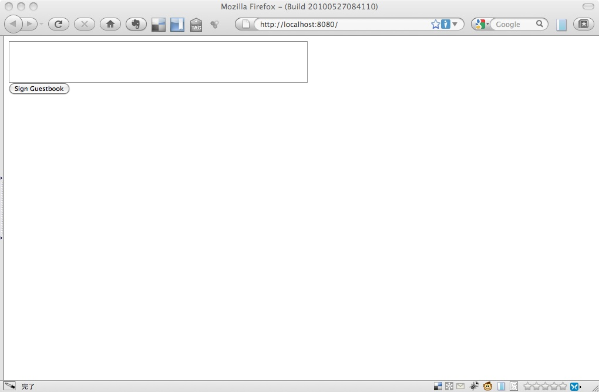

Google App Engine / Python
Google App Engine とは
- Google が提供するサービスの一つ
- Web アプリケーションを Google のインフラ上で実行する環境を提供する
- PaaS (Platform as a Service) に分類される
- Web アプリケーションが実際に動作するマシンを意識しなくともよい
- 本番環境があらかじめ整備されている
- 開発言語が制限される
- Python (GAE/P)
- Java (GAE/J)
- JVM 上で動けば（Scala, JRuby, Quercus など) 一応 OK
- 一般的な RDBMS は使えない
- DataStore というデータを保存する仕組みが用意されている
基本的に無料
その代わりいろいろと制限があります。
- 作成できるアプリケーションは10個まで
- 一旦作成したドメイン名は変更できません
- DataStore の容量: 1GB
- 一日あたり
- CPU時間: 6.5 CPU-hours
- ネットワーク帯域: 1 GB(受信発信それぞれ)
- 送信できる E-mail の数: 2000
- 1 リクエストは 30 秒以内に終えること
課金することで緩めることのできる制限もあります
制限を超過すると
503 Error を返すようになります。一日ごとにこの制限はリセットされます。
GAE/P で開発するための準備
GAE/P で開発するための準備として、主に
- SDK をインストールする
- GAE に登録する
の二つが必要です。
Python をインストールする
SDK をインストールする前に、まずは Python をインストールする必要があります。
GAE/P は Python 2.5 以上の 2.x 環境が必要です。
バージョンを確認する場合は以下のコマンドを実行してください。
% python -V
最近の OS（OS X Snow Leopard や Ubuntu 10.4 など）では 2.6 がインストールされてますのでそのままで結構です。 また、3.x 系列だと（デフォルトでインストールされていることはまずないでしょうが）動かないので注意が必要です。
Python のダウンロードはhttp://www.python.org/download/ からできます。
参考URL: Python イントロダクション
SDK をダウンロードする
http://code.google.com/intl/ja/appengine/downloads.html から OS ごとにダウンロードできます。
Windows or Mac OS X には GoogleAppEngineLauncher というアプリケーションが付属しますが Linux の場合はライブラリ一式が渡されるので自分で適当なディレクトリに配置して使用します。
以降、Linux でのインストール方法を解説します。
SDK の配置
% wget http://googleappengine.googlecode.com/files/google_appengine_1.3.4.zip
% unzip google_appengine_1.3.4.zip
% ls
google_appengine/ google_appengine_1.3.4.zip
解凍してできた google_appengine を適当なディレクトリに置きます。今回は /usr/local に配置することにします。
# mv google_appengine /usr/local
配置したディレクトリを PATH と PYTHONPATH に設定します。
# zsh の場合
PATH=$PATH:/usr/local/google_appengine
export PYTHONPATH=$PYTHONPATH:/usr/local/google_appengine
SDK が適切にインストールされたか確認するために、デモアプリケーションを動かしてみましょう
% dev_appserver.py /usr/local/google_appengine/demos/guestbook
正常に起動すれば ok です。http://localhost:8080にアクセスしてみましょう。 
{kind=link}
正常に起動しない場合
下記のようなエラーが出た場合、アクセス権を修正する必要があります。
appengine/tools/dev_appserver_main.py", line 66, in
from google.appengine.tools import os_compat
ImportError: cannot import name os_compat
以下のコマンドを実行してみてください。
% cd /usr/local/google_appengine
% sudo chmod -R ugoa+r *
管理者権限を持っていないユーザの場合上記のエラーが出ることがあるようです。
参考URL:
- http://www.dr-chuck.com/csev-blog/2010/03/app-engine-fix-for-importerror-cannot-import-name-os_compat/
- http://fileformat.wordpress.com/2010/03/14/fix-for-google-appengine-importerror-cannot-import-name-os_compat-on-linux/
GAE へのアカウント登録
作成したアプリケーションをデプロイするためには、アカウントを登録する必要があります（Google アカウントを持っている前提）。 アカウント登録には携帯電話が必要です。
http://appengine.google.com にアクセスし、[Welcome to Google App Engine] → [Create an Application] の順に進みます。
Verify Your Acount by SMS という画面に進むので、
Country and Carrier: でそれぞれ Japan, 携帯電話のキャリアを選択します。
Username: に携帯電話の e-mail アドレスの @ より前の部分を入力します。
[Send] を押すと、携帯に下記のような 7 桁の認証キーが送られてきます。
Google App Engine Code: 0000000
これを画面に入力すると、アカウントの登録が完了します。
注意: 携帯の e-mail 設定で noreply@google.com を受信許可してください。
参考URL: http://d.hatena.ne.jp/chipa34/2009/0121/1232506248
GAE/P のチュートリアル
公式で用意されているチュートリアルの紹介
URL: http://code.google.com/intl/ja/appengine/docs/python/gettingstarted/
Hello World アプリケーションの作成
では、実際にアプリケーションを作成してみましょう。
お決まりですが、Hello, world! と出力するだけのアプリケーションを作成します。
% mkdir helloworld
% cd helloworld
helloworld という名前のディレクトリを作成しました。アプリケーションに関するファイルは全てこのディレクトリに配置します。
設定ファイルの作成
Google App Engine では app.yaml というファイルにアプリケーションの設定を記述します。
% cat app.yaml
application: helloworld # アプリケーション名
version: 1 # アプリケーションのバージョン
runtime: python
api_version: 1
handlers:
- url: /.* # URLが /.* に一致する場合は
script: helloworld.py # helloworld.py で処理する
このファイルを、helloworld ディレクトリ直下に配置します。
アプリケーション本体の作成
リクエストを実際に処理するスクリプトファイルを作成します。
% cat helloworld.py
print 'Content-Type: text/plain'
print ''
print 'Hello, world!'
アプリケーションの実行
以上の二つのファイルを用意すればアプリケーションは完成です。 ファイル構成は以下のようになっています。
% tree
.
|-- app.yaml
`-- helloworld.py
では、アプリケーションを実行してみましょう。デモを実行した場合と同様に dev_appserver.py を使用します。
% dev_appserver.py ../helloworld
では、http://localhost:8080 にアクセスしてみましょう。Hello, world! と出力されているはずです。
webapp フレームワークを使ってみる
このままだと物悲しいので、Web アプリケーションフレームワークを使ってみましょう。
Google App Engine は WSGI に対応しているため、様々な Web アプリケーションフレームワークを使うことができます。
- Django
- web.py
- cherrypy
ここでは、Google が GAE のために用意した webapp というフレームワークを使ってみることにします。
補足: WSGI について
GAE/P の便利機能の紹介
Task Queue
キューにタスクをためておくと、サーバ側で非同期にタスクを実行してくれます。 タスクは特定の URL に対するリクエストとして定義されます。
from google.appengine.api.labs import taskqueue
class SomeHandler(webapp.RequestHandler):
def get(self):
self.response.out.write('Hello, World!')
def post(self):
key = self.request.get('key')
# Add the task to the default queue
taskqueue.add(url='/worker', params={'key':key})
self.redirect('/')
class SomeWorker(webapp.RequestHandler):
def post(self):
## some task...
def main():
run_wsgi_app(webapp.WSGIApplication([
('/', SomeHandler),
('/worker', CounterWorker),
])
if __name__ == '__main__':
main()
markovchains では、文章を解析してデータストアに保存する処理を Task Queue で行っています。同期的に処理する必要がない処理は積極的に Task Queue に投げるとよいと思われます。
URL: http://code.google.com/intl/ja/appengine/docs/python/taskqueue/overview.html
Cron
指定した時間、または一定の間隔で実行されるタスクのスケジュールを設定できます。タスクは特定の URL に対するリクエストとして定義されます。
URL: http://code.google.com/intl/ja/appengine/docs/python/config/cron.html
markovchains では、Cron を利用して文章を定期的に生成しています。これによって文章生成の負荷を平準化しています。
Memcache
GAE/P では memcached とよく似た Memcache という機能を提供しています。 Memcache は Key とそれに対応する Value を保存することができます。
def get_data():
data = memcache.get("key")
if data is not None:
return data
else:
data = self.query_for_data()
memcache.add("key", data, 60)
return data
Memcache の特徴として、
- 高速に動作
- 容量が少ない
- サーバの状態によっては勝手に破棄されることもある
などがあります。あくまでキャッシュとして利用すべきで、実データは DataStore に持たせておいた方がいいでしょう。
markovchains では生成しておいた文章の保管場所として等、様々な箇所で使用しています。
URL: http://code.google.com/intl/ja/appengine/docs/python/memcache/usingmemcache.html
DataStore について
DataStore を使う上でひっかかった箇所をまとめました。
正規化は極力避けましょう
DataStore は RDB ではありません。JOIN は使えません。正規化はやめましょう。
# ダメな例
class Word(db.Model):
name = db.StringProperty()
class Chain(db.Model):
preword = db.ReferenceProperty(Word)
postword = db.ReferenceProperty(Word)
isstart = db.BooleanProperty()
# よい例
class Chain(db.Model):
preword = db.StringProperty(Word)
postword = db.StringProperty(Word)
isstart = db.BooleanProperty()
Read / Write を減らす工夫をしましょう
DataStore の Read は決して速くありません。Write はさらに遅いです。 極力一回のレスポンスで実行する get/put は減らす努力をしましょう。
put に関しては、本当に今すぐ更新しなければならないデータなのか考慮しましょう。 そうでない場合、Task Queue を使ってレスポンス内で処理しないようにしましょう。
get に関しては、
- 正規化を避けて一つの画面で必要なデータは一つのモデルにまとめる
- Memcache を活用する
などを考慮にいれましょう。
ある条件で複数のデータをまとめて取得するような場合は、それらをあらかじめ取得しておいて（Cron を使うなどして）、Memcache に保存しておくという方法もよいでしょう。
# 複数のデータを取得
chains = Chain.gql("WHERE isstart = True")
# Memcache に突っ込む
memcache.add("isstart", chains)
# 必要なときに取り出す
chains = memcache.get("isstart")
以下、下記URLが参考になります。